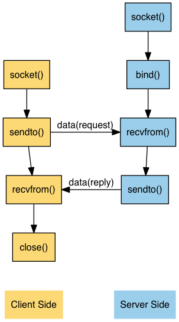

Chapter 8
Table of Contents
Elementary UDP Socket
Introduction
- UDP和TCP的最大不同就是,UDP是一个connectionless, unreliable的datagram协议.
意义上是connection-oriented, reliable的byte stream协议. 从函数调用图来看
UDP是被TCP简单很多

recvfrom and sendto Functions
- 这两个函数和read, write相似,只不过多了几个参数
#include <sys/socket.h> /*******************************************************************/ /* Both return: number of bytes read or written if OK, -1 on error */ /*******************************************************************/ ssize_t recvfrom(int sockfd, void* buff, size_t nbytes, int flags, struct sockaddr* from, socklen_t* addrlen); ssize_t sendto(int sockfd, const void* buff, size_t nbytes, int flags, const struct sockaddr* to, socklen_t addrlen);
- 前三个参数sockfd, buff, nbytes就正好对应read和write的前三个参数(descriptor, pointer to buffer to read into or write from, number of bytes to read or write)
- flag一般为0
- from参数也是一个socket address structure,表示数据从哪里来的. addrlen是一个 指针(返回值),表示收到了多少字节.
- recvfrom如果只看后两个参数的话,会很像accept()
- to参数一般是一个socket address structure (长度由addrlen指定),表示数据传到 什么地方.
- sendto如果只看后两个参数的话,会很想connect()
- UDP是可以传递0个字节的.对方通过recvfrom()就会收到一个0,这并不意味着我们要关闭 connection,话说回来了,UDP里面就没有connection
UDP Echo Server: main Function
- 我们来看一个UDP server的例子
#include "unp.h" int main(int argc, char *argv[]) { int sockfd; struct sockaddr_in servaddr, cliaddr; sockfd = Socket(AF_INET, SOCK_DGRAM, 0); bzero(&servaddr, sizeof(servaddr)); servadr.sin_family = AF_INET; servaddr.sin_addr.s_addr = htonl(INADDR_ANY); servaddr.sin_port = htons(SERV_PORT); Bind(sockfd, (SA*)&servaddr, sizeof(servaddr)); dg_echo(sockfd, (SA*)&cliaddr, sizeof(cliaddr)); return 0; }
- UDP的类型就是SOCK_DGRAM了(也就是datagram), 还记得TCP么,是SOCK_STREAM(byte stream).这也是两者的重要不同.
UDP Echo Server: dg_echo Function
- server的主要工作都是dg_echo完成的
#include "unp.h" void dg_echo(int sockfd, SA* pcliaddr, socklen_t clilen) { int n; socklen_t len; char mesg[MAXLINE]; for (; ;) { len = clilen; n = Recvfrom(sockfd, mesg, MAXLINE, 0, pcliaddr, &len); Sendto(sock, mesg, n, 0, pcliaddr, len); } }
- server的处理很简单recvfrom了以后再sendto,需要注意的是这个函数永远都不会 结束,因为UDP是connectionless的协议,没有EOF
- UDP是提供的一种iterative server.不像TCP那样fork出来单独的process来处理, 而是一个process处理所有的需求
- UDP每个socket也都是有自己独立的receive buffer的,如果多个datagram在同一个
时间到达的话,是会放到buffer里面等待读取的.但是前面说了UDP不会fork,所以一直
只有一个proces在处理的话,其receive buffer也就只有一份.
- 而TCP每个process都有一个receive buffer
- 前一节介绍的main()是protocol-dependent的(因为指定了AF_INET了),而这一节的 dg_echo却是protocol-independent的,因为dg_echo永远不会去内部查看传递给它的 这个SA结构体的内容(只把它当作一个generic的指针).dg_echo只是把pcliaddr在 recvfrom和sendto直接传递而已.
UDP Echo Client: main Funtion
- udp client的代码如下
1: #include "unp.h" 2: int main(int argc, char *argv[]) 3: { 4: int sockfd; 5: struct sockaddr_in servaddr; 6: 7: if (argc != 2) { 8: err_quit("usage: udpcli <IPaddress>"); 9: } 10: 11: bzero(&servaddr, sizeof(servaddr)); 12: servaddr.sin_family = AF_INET; 13: servaddr.sin_port = htons(SERV_PORT); 14: Inet_pton(AF_INET, argv[1], &servaddr.sin_addr); 15: 16: sockfd = Socket(AF_INET, SOCK_DGRAM, 0); 17: dg_cli(stdin, sockfd, (SA*) &servaddr, sizeof(servaddr)); 18: return 0; 19: }
- line 11-14: 填满我们的generic socket structure, 当然现在用的是SOCK_DGRAM
- 大部分的工作是在dg_cli里面完成的
UDP Echo Client: dg_cli Function
- dg_cli完成了主要的client的工作
1: #include "unp.h" 2: 3: void dg_cli(FILE* fp, int sockfd, const SA* pservaddr, socklen_t servlen) { 4: int n; 5: char sendline[MAXLINE], recvline[MAXLINE + 1]; 6: 7: while (Fgets(sendline, MAXLINE, fp) ! = NULL) { 8: Sendto(sockfd, sendlin, strlen(sendline), 0, pservaddr, servlen); 9: 10: n = Recvfrom(sockfd, recvline, MAXLINE, 0, NULL, NULL); 11: 12: recvline[n] = 0; /* null terminate */ 13: Fputs(recvline, stdout); 14: } 15: }
- line 7: 使用fgets()从fp(也就是stdin)读取一行
- line 8: 使用sendo()把刚才fget()读取的数据发送给server
- line 10: 使用recvfrom()读取serve的反馈
- line 13: 使用fputs()把反馈打印到stdout上.
- 在TCP里面,client端可以使用bind来要求获取指定的端口号.或者在connect()的时候, 赋予socket一个临时端口号. 在UDP这里是调用sendto的时候,会自动赋予临时端口号
- 我们的recffrom把第五第六个参数设置成了NULL,说明我们不关心对方(返回给我们数据 的server)是谁. 这很可能会引入风险:谁都可以发送数据给我们,而且我们还会读取到.
- dg_cli和dg_echo一样是protocol-independent的.